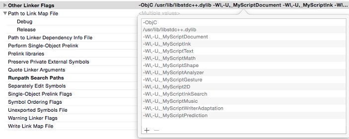

To install and integrate the Single Character Widget on iOS, you must be using the latest version of Xcode and iOS SDK. Minimum deployment target is 7.0.
The Single Character Widget for iOS is a framework that you add to your Xcode project.

To use the Single Character Widget in your app, add the following import instructions:
#import <AtkScw/SingleCharWidget.h>You can instantiate and configure a SCWSingleCharView with a few lines:
// Create the Single Char Widget View
SCWSingleCharView *_widget = [[SCWSingleCharView alloc] init];
_widget.delegate = self;
// Recognition resources
NSArray *_resources = [NSArray arrayWithObjects:
[resourceBundle pathForResource:"latin/latin-ak-superimposed.lite" ofType:"res"],
[resourceBundle pathForResource:"en_US/en_US-lk-text.lite" ofType:"res"],
[resourceBundle pathForResource:"mul/mul-lk-gesture" ofType:"res"],
nil];
// Certificate
NSData *_certificate = [NSData dataWithBytes:myCertificate.bytes length:myCertificate.length];
// Configure the Single Char Widget View with the recognition resources and the certificate
[_widget configureWithLanguage:@"en_US"
resources:_resources
certificate:_certificate];